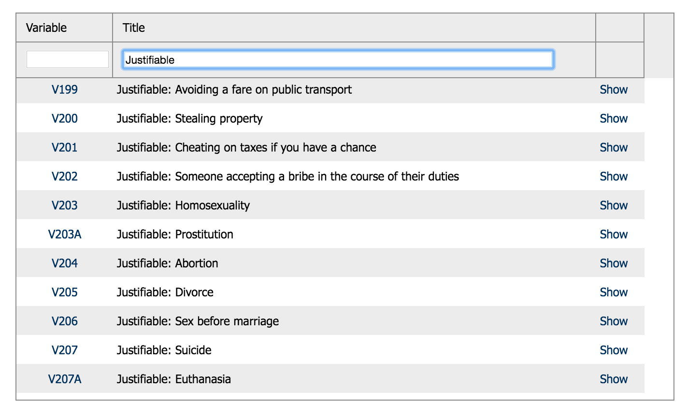
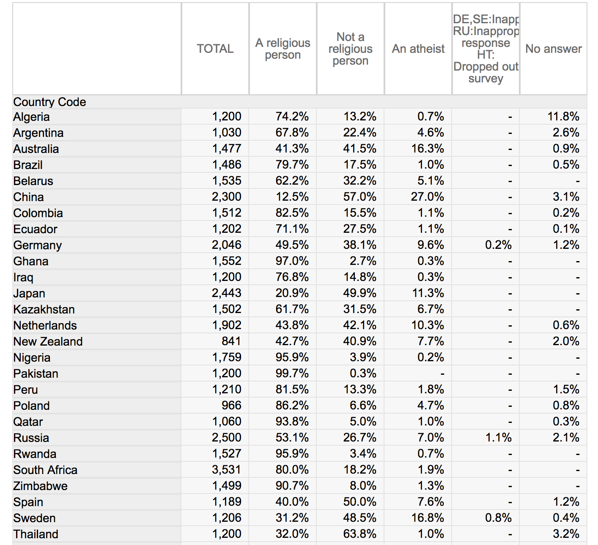
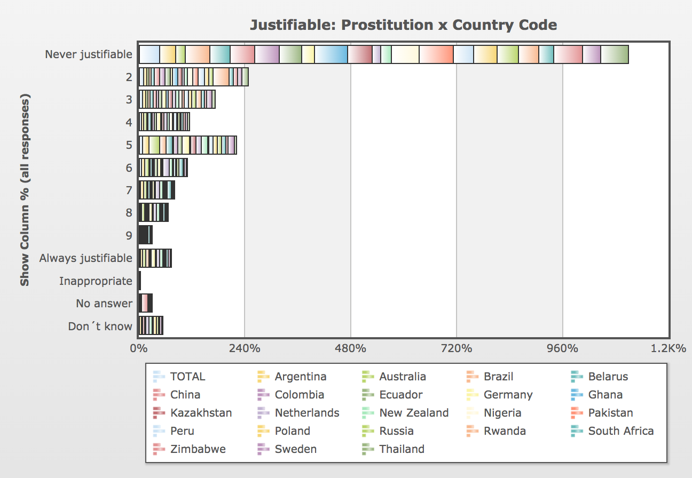
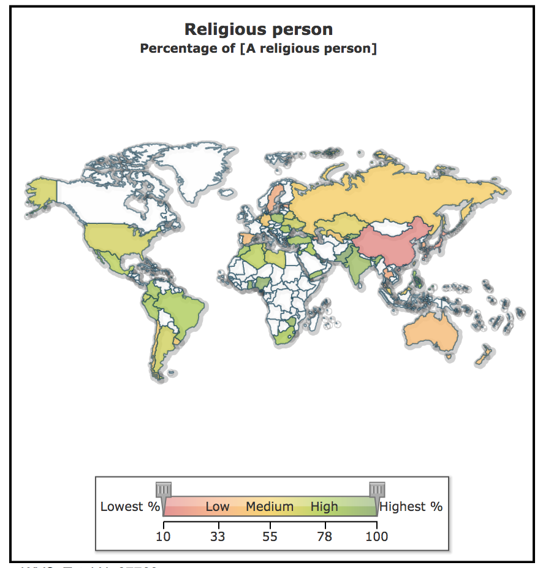

As a navigated on the WVS site, I discovered that there were questions about justifying certain dilemmas in life. I soon started to suspect that people with the same nationality might tend to be equally tolerant or intolerant toward these, regardless of the topic. I also suspected that it might correlate with the nation's importance of religion, and decided to investigate it!
I selected 30 countries evenly from the continents, as following:
After that, I selected the 4 latest waves available and my main question "Religious person". I also selected 7 suitable ”Justifiable”-questions I suspected would correlate with the religiosity of the country.
The data was initially presented as following:
Via WVS's visualization tools it was possible to see that e.g. Pakistan and Ghana had the highest % of "Never justifiable" for Prostitution:
It was also possible to see from this map that e.g. Ghana had one of the highest % of "Religious person":
Although the data was fairly well displayed, it was almost impossible to see any correlations bewteen countries over several years.
To be continued!